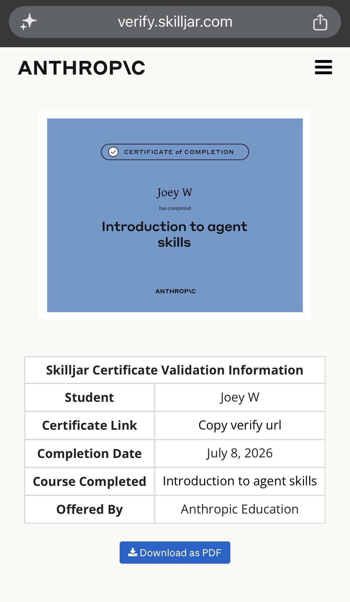

Introduction to agent skills
Anthropic Education
Course completion
AI & machine learning
Overview
A one-hour, six-lesson Claude Code course on creating, configuring, sharing, and troubleshooting reusable markdown instructions that Claude applies to matching tasks.
Syllabus & skills
- Understand skills, their locations, and request matching
- Create skills with valid SKILL.md frontmatter and verify loading
- Write effective descriptions and limit tools with allowed-tools
- Organize larger skills with progressive disclosure, references, and scripts
- Choose among skills, CLAUDE.md, subagents, hooks, and MCP servers
- Share skills and diagnose triggering, loading, conflicts, and runtime issues
Issuer documentation
Introduction to agent skills · Claude Academy
Anthropic Education
See Source